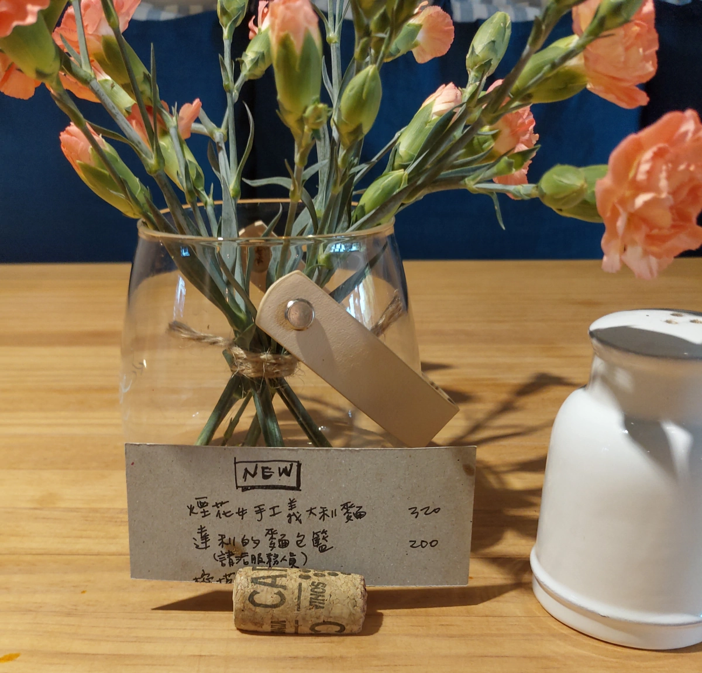
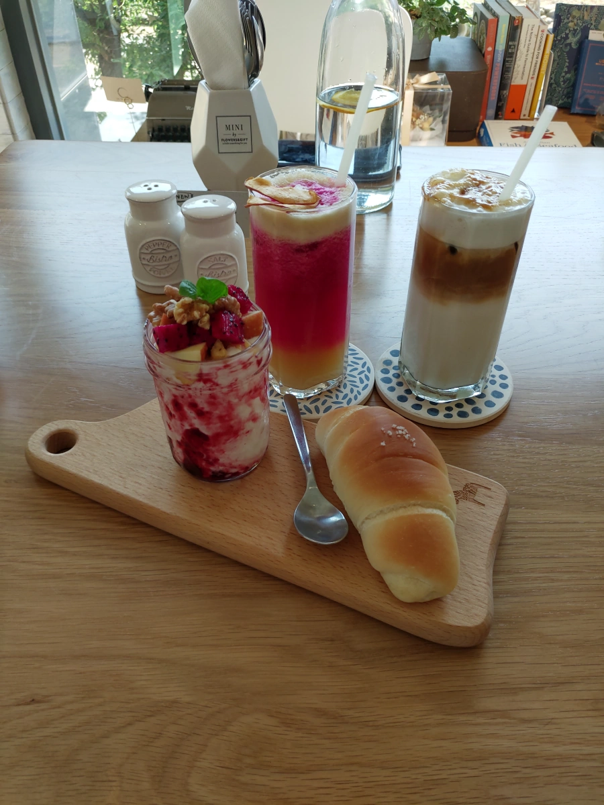
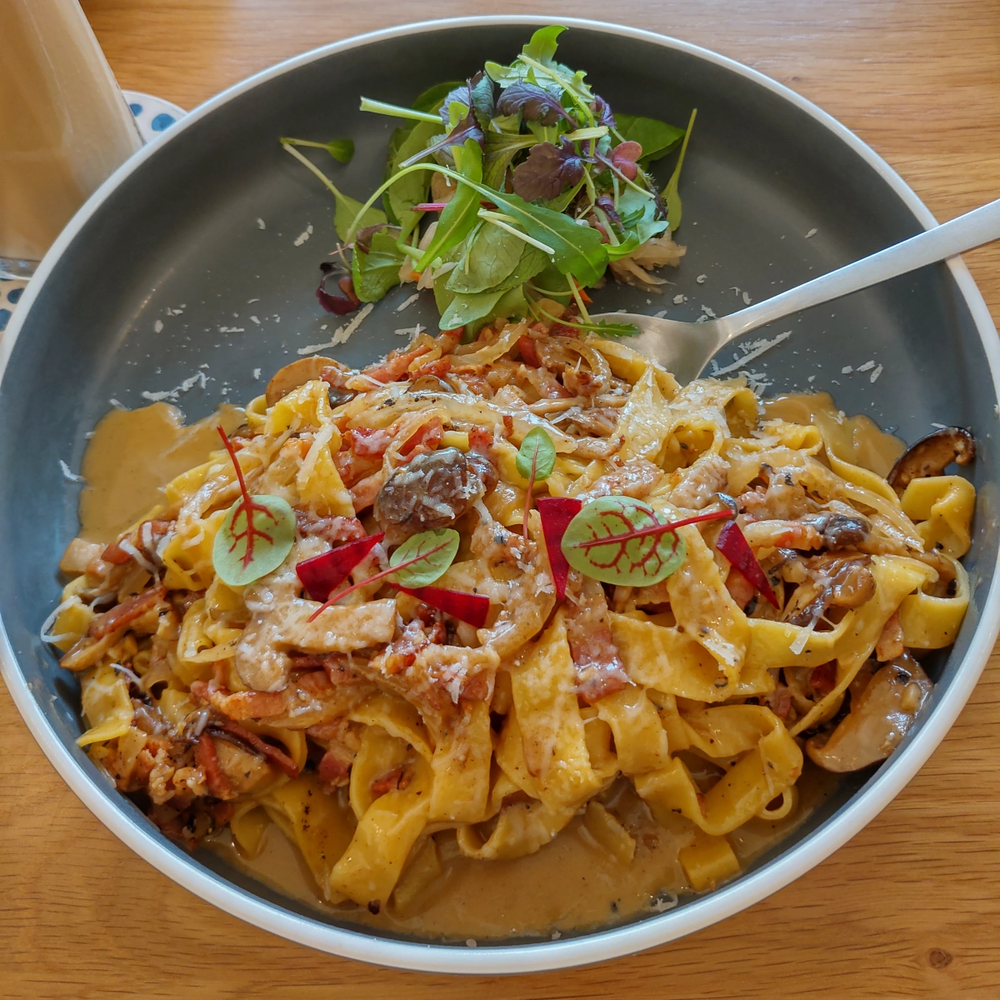
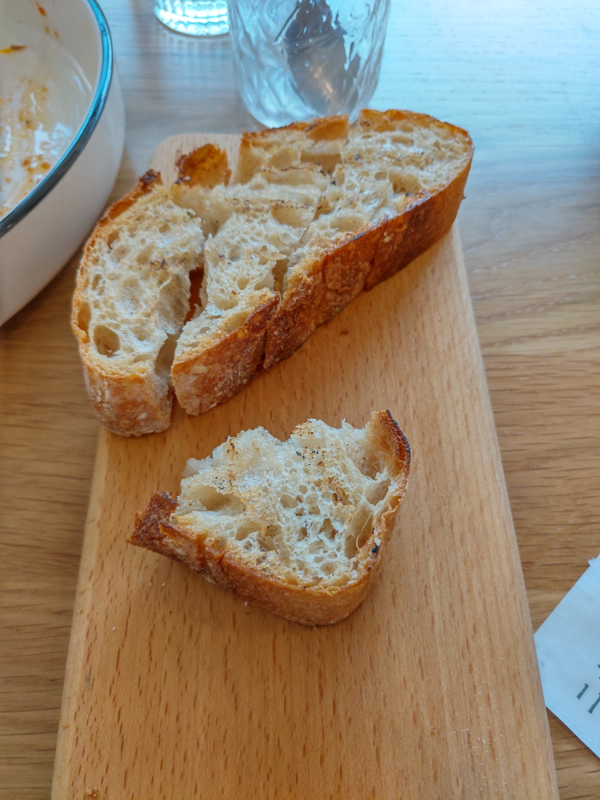
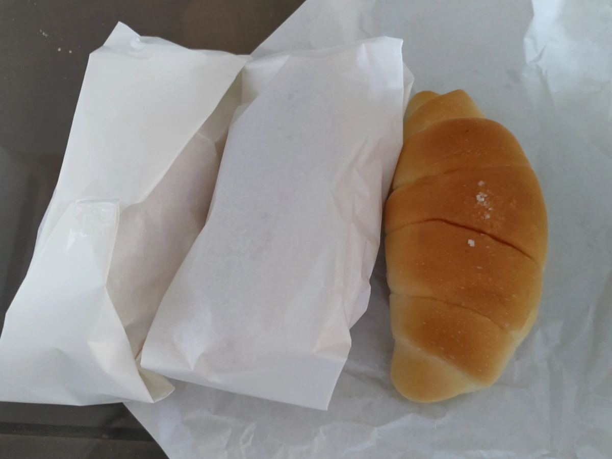

[竹北] 二十四分之一 早午餐 手作麵包 二訪
| 餐廳名稱: | 二十四分之一 早午餐 手作麵包 |
|---|---|
| 地 址: | 新竹縣竹北市文興路51號 (興隆國小對面) |
| 營業時間: | 週四~週二 09:00~19:00 |
| 週三公休 | |
| 電 話: | 03 667 3168 |
上次 二十四分之一 早午餐 手作麵包 的 一訪 是吃早餐，義大利麵要 12:30 才開始供應， 今天中午，決定來二訪 二十四分之一，試一下他的午餐義大利麵。今天不能訂位，一到場，正在清理空桌，等了5分鐘才入座。 坐下後環顧四週，幾乎全滿了。
桌上的新菜菜單，正式的菜單請到 一訪 的文章查閱。 總共就這個 煙花女手工義大利麵 與正式菜單中的 蘑菇培根蛋奶手工義大利麵 兩種義大利麵。 達利的麵包籃，就是店家配三種麵包，客人挑一種麵包，共四個麵包。
今天點了 蘑菇培根蛋奶手工義大利麵、再點一次 經典鮭魚班尼迪克蛋，然後挑了一個鹽可頌麵包 加90元的 蜂蜜和核桃水果優格，共三道菜。 店家有免費的開水，不過還是點了小王子的玫瑰花 與 冰焦糖瑪奇朵 兩杯飲料。 
下圖就是 鹽可頌、優格與飲料。鹽可頌在這間店的正式名稱似乎是 奶油鹽味捲，這附近的麵包籽麵包店的鹽可頌，是我新竹縣吃了好幾家麵包店的 鹽可頌最好吃的。當然台北有幾間麵包店 或是 桃園野上麵包，可能也有不錯的鹽可頌。麵包籽麵包店的品質好，定價就高一點。 今天出乎意料覺得二十四分之一的奶油鹽味捲，跟麵包籽的鹽可頌 差不多好吃，可是這邊便宜10元。
小王子的玫瑰花 沒喝出什麼玫瑰花的味道，猜測是用牛奶、蘋果、火龍果、鳳梨 調出玫瑰的顏色而已，喝起來有點像帶青蘋果味的桑葚牛奶，其實還不錯喝啦。
冰的 焦糖瑪奇朵，瑪奇朵 Macchiato 在意大利文中就是"斑點"的意思，配方是 Espresso 加微量的奶泡，等於咖啡上有少量白色點，就是瑪奇朵咖啡。 再加香草、焦糖，就是焦糖瑪奇朵。這裡的冰焦糖瑪奇朵，感覺店家不管傳統，做成冰拿鐵咖啡加焦糖吧。整杯咖啡冰冰甜甜的，挺好喝的。 
蘑菇培根蛋奶手工義大利麵，上方的生菜沙拉醬汁是酸的，下方的義大利麵，白醬，鹹香好吃。本來預想這種店，義大利麵可能是隨便做， 沒想到專業度感覺還可以耶。不過只有兩種義大利麵，沒來幾次就全部點遍了吧。 
經典鮭魚班尼迪克蛋 是上次一訪 就點過的，所以就沒拍照。 這道菜是 班尼迪克蛋 下方 鋪著酸麵包的切片，驚喜就是發生在這裡。 吃完時，還剩下一些料。女王想說再加點一份麵包來沾，沒想到服務人員問清楚後，說麵包可以續一次，不用錢，真高興。 可是等了十幾分鐘，還是沒送上來，中間還有一位服務人員主動前來關心加點的麵包，所以店家也沒忘記。
最後，終於上來了，共三片，拿起來一吃，哇賽，很棒的炭香味夾雜著純粹麵粉香，超好吃的，趕快補拍照片。 原來等那麼久，就是在等那個直火烤爐的空檔，之前被班尼迪克蛋蓋著，根本感覺不到炭香，這樣單獨送上來，炭香味非常明顯，很棒。 就算買他的麵包回去也沒有那個大火烤爐啊，那個直火烤爐是有直條紋鐵條的那種，如果開始賣牛排也不意外了。 我建議讀者如果點這道菜，務必要求麵包單獨另外上，頂多要吃時再用湯匙挖鮭魚與班尼迪克蛋來塗就好了。 
二十四分之一的奶油鹽味捲，頗優秀，最後外帶三個回家，105元。 
二十四分之一 雖然不錯，不過好像菜單大部分都試過了，如果新菜單吸引人，再回訪了。